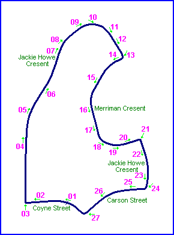
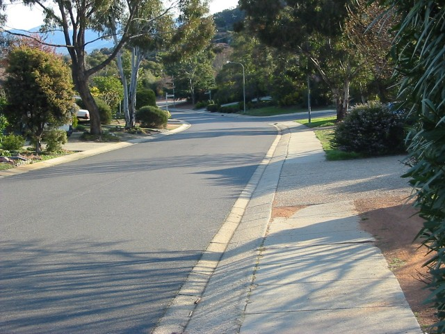
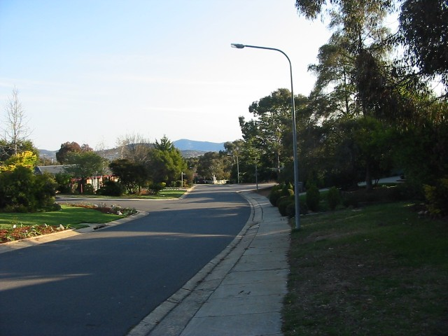
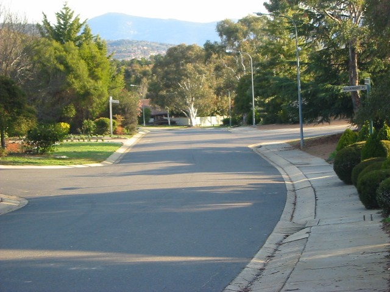
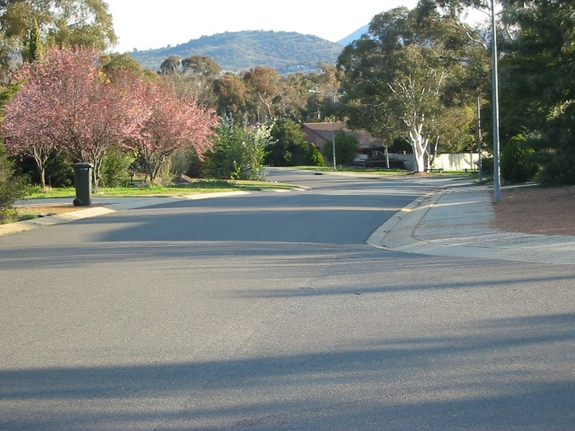
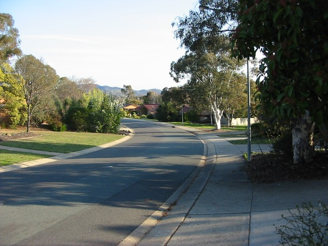
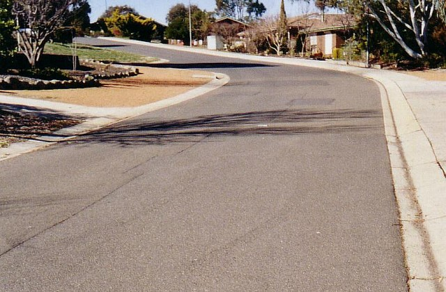
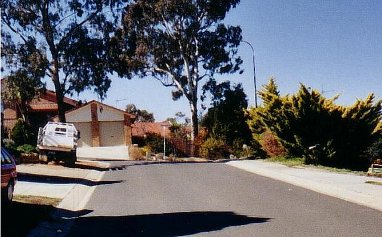

Macarthur Park - Merriman Cresent
|| Contents || Coyne [01-06] | Jackie Howe [07-13] | Merriman [14-20] | Carson [21-27] || Home ||

Numbers and arrows on the map represent the location and direction of where
the photographs were taken. Click links above to view photo pages.
Return to racingcircuits.net's Photo Archive Main Index

14 - ...which descends quite steeply

15 - Still descending

16 - Approaching the lowest point on Merriman

17 - This is where it bottoms out and starts to rise

18 - Lift up off your left earhole here

19 - Up from the depths; the climb up from the lowest part of Merriman
Crescent.

20 - Still climbing, approaching the intersection with Jackie Howe
Crescent, where the circuit turns hard right...
| << PREVIOUS PAGE |
Photographs and Text ©Mark Taylor. Reproduced here with kind permission.